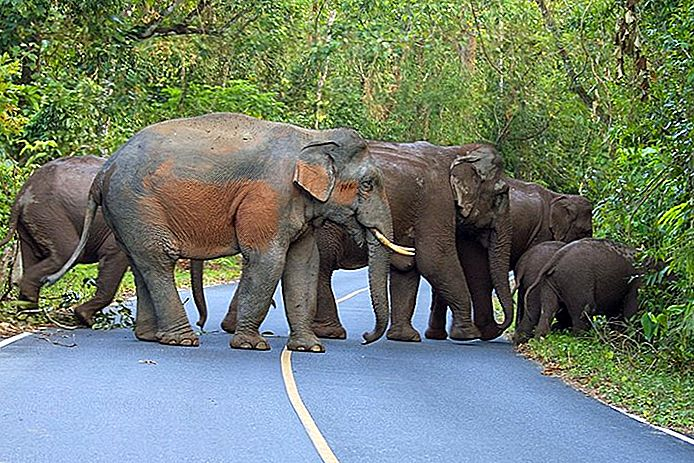

1 Рейлей-Біч
Крабі провінція є домом для деяких з найвідоміших пляжів Тайланду, і Railay є кремом цієї культури. Широко вважається одним з кращих пляжів у країні, Railay доставляє обіцянки білосніжних пляжів, прозору блакитну воду і відчуття, що ви знайшли шматочок раю. Ви повинні взяти човен, щоб дістатися до острова відпочинку, з допомогою послуг з міста Крабі та Ао Нанг.
Пляжі є основною причиною відвідування Ралей, але це також гаряча скелелазіння. Карячі піки Рейлей картають авантюристів, як досвідчених, так і новачків, щоб спробувати свої сили піднятися на високі скалістичні скелі. Серед безлічі інших активних речей, які можна зробити, ви можете піти на слон, поплавати на байдарках, підводним плаванням, або взяти на себе деякі легкі варіанти, такі як кулінарні заняття та потурання масажу. Існує також туристична приналежність Діамантова печера, з зручною прогулянкою для розміщення цікавих відвідувачів, які бажають прогулюватися між розтяганнями сонячних ванн.
2 Koh Phi Phi
Острови Пхі-Фі, також в Крабі, є однією з найпопулярніших курортних зон Таїланду з причини. Лише Пхі-Пхі-Дону мешкають, з одноденними екскурсіями до навколишніх островів. Одне з веселощів на Koh Phi Phi є Пляж Мавпи, де ви будете зустрічатися особисто, буквально, з однодумними істотами. Ви можете найняти гід, який виведе вас на маленьку дерев'яну човен або орендувати власний каяк. Також є невеликий стенд, де можна купити закуски та фруктові коктейлі, але зависати на ваших задоволеннях. Якщо ви залишите їх незахищеними, мавпи нахабно копатимуть і потягнуть прямо перед вами. Довгий пляж Ще одне чудове місце на острові; це не затишне місце, але це чудово підходить для перегляду заходу сонця. Якщо вам пощастило і приплив вийде, це прекрасна прогулянка назад до основної частини острова.
Туроператори пропонують пакети для підводного плавання та дайвінг-походів, а також екскурсії до сумнозвісних Майя-Бей, де фільм Леонардо Ді Капріо "Пляж" був знятий. Оскільки в Кох Фі Фі привертає багато туристів, існує безліч туркомпаній, які організовують квитки на інші пункти призначення, такі як Пхукет, Ко Чанг, і Ко Ланта. Хоча ви навряд чи знайдете це зараз, Phi Phi Don був однією з областей, сильно постраждав від цунамі 2004 року. Гостьові будинки, ресторани та ринки були перебудовані, а натовпи все ще йшли на острови курорту. Є невеликий, похмурий меморіальний парк для вшанування тих, хто загинув у трагедії, проте курортні зони здаються інакше відродженими.
3 Великий палац, Бангкок
Навіть якщо ваші плани для Таїланду в основному включають в себе гримлення на пляжі, затихання до слонів, а також як можна більше їсти массаман-каррі та тома-ка-га, як це можливо людсько, ви, ймовірно, витратите щонайменше день або два в Бангкоку. У столиці багато чого бачити і зробити, але це, мабуть, найкраще розпочати з Великого палацу. Це перша визначна пам'ятка міста, і це вражає історичним значенням і майстерністю. Підстави являють собою лабіринт королівських залів, храмів і древніх мощей, найважливіших істот Ват Фра Каео, Храм Смарагдового Будди. Релікт в цьому храмі, як кажуть, є шматочка кістки або волосся від самого просвітленого Будди. Дозвольте кілька годин здійснити Великий палац правосуддя, але якщо ви зайдете пішки пішки пізніше, ви можете легко взяти в деяких інших головних визначних пам'яток міста. Знаменитий Ват По і Ват Арун, Храм Світанця (прекрасне місце, де можна спостерігати захід сонця). І оскільки Бангкок є основним центром міжнародних перевезень, це чудова відправна точка для екскурсій по всій країні.
4 Вулиця Неділя, Чіанг Маі
Кожен відвідувач у Тайланді чекає дешевої і смачної їжі, і його можна знайти в безлічі в прогулянковій вулиці Неділя вночі Чіанг-Май. Продавці продають різноманітні вироби: тигр тайський, курячий сатай, самос, крабові торти, смажені банани, солодкі ротези та свіжі фрукти - часто за менш ніж 2 долари на шматок. Коли ви задовольняєте своїм кулінарним бажанням, ви можете ознайомитись із сотнями кіосків, які продають безліч унікальних товарів, таких як все природне мило, текстильні вироби з ручним фарбуванням, що мають унікальні візерунки місцевих племен, пахощі та ефірні олії, музичні інструменти, картини , настінні оббивки тощо.
Ринок незмінно перевантажується щотижня, незалежно від того, який час року ви відвідуєте, так що прив'язуйтеся до себе і намагайтеся насолоджуватися, як частина громади. Це обов'язкова дія в Чиангмаі, і це є важливою частиною Тайландського досвіду. Якщо ви не знайомі з неділі на ринку або просто хочете покуштувати інший ринковий досвід в Чианг-Май, ознайомтеся з Суботня пішохідна вулиця або Нічний базар на дорозі Чанг Клан, щоденна подія. Для чогось меншого туриста, перевірте денний час Warorot Market, поблизу річки Ма Пінг.
5 Пай
Репутація Таїланду країною чудових пейзажів та дружніх людей в значній мірі залежить від всесвітньо відомих південних пляжів. Більшість людей не розуміють, що величезна північ також є домом для захоплюючих пейзажів, хоча вони цілком відрізняються від природи. Північний Таїланд, особливо західний регіон біля бірманського кордону, відзначається гірською джунглію, яка є як міцною, так і красивою. Пай в провінції Мае-Гонг Сон - ідеальне місце, де можна насолоджуватися природною красою країни, а також знаменитою тайською гостинністю та приготуванням їжі. Це маленьке містечко має репутацію Мекки для хіпі та туристів, хоча ви також побачите місцевих жителів та сімей. Є невеликий нічний вуличний ринок, різноманітні місцеві та західні страви, легкий доступ до найближчих храмів, водоспадів та вражаючих Кайон Пай. Під час прогулянки по крихітному центру міста виникає атмосфера веселощів та розслаблення, і саме це вібрація продовжує малювати натовпи сезону після сезону.
6 Національний парк Као Яй

Слани шанують в Таїланді, і статуї та картини з них можна побачити скрізь, де ви йдете. У країні існує безліч груп подорожей і таборів для слонів, які дозволяють вам провести день або більше разом з істотами, походити по джунглях, купатися і навіть отримувати допомогу при ранкових харчуваннях. Але, можливо, більш цікавим є шанс побачити їх у своєму природному середовищі, а національний парк Као Яй дає прекрасну можливість це зробити. Ви побачите слонів, які бродять біля водоспадів, екзотичних хижих птахів, мавп та багатьох інших тропічних істот, які називають парк домом. Якщо для одноденного проживання не вистачає, щоб взяти все це в себе, можна вирушити в парк і встати досить рано, щоб спостерігати за сходом сонця над пишним ландшафтом.
7 Історичне місто Аюттхая
Аюттхая представляє уявлення про славу стародавнього Таїланду, де відвідувачі можуть бродити з приголомшливими, але романтичними руїнами колишньої столиці. Після періоду Сукотая місто було найважливішим у Таїланді, а старі палаци та храми - це свідчення цього. Існує також декілька зарубіжних поселень, де ви можете краще зрозуміти вплив інших країн на той час у Таїланді. Аюттхая розташована лише на короткій автобусній поїздці або поїзді на поїзді з Бангкока, що робить його зручним для одноденної поїздки, якщо ви натискаєте час. Якщо ви знаходитесь на більш неквапливому розкладі, плануйте провести кілька днів у стародавній столиці та орендуйте пішохідний велосипед, щоб оглянути як старе місто, так і нове.